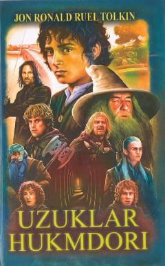

UHO'rta Yer olamida yovuzlikka qarshi kurash haqidagi afsonaviy fantastik roman.
Ushbu asar J. R. R. Tolkienning mashhur "Uzuklar hukmdori" epopeyasining birinchi qismi bo'lib, unda yovuzlik va ezgulik o'rtasidagi mangu kurash tasvirlanadi. Asar yoshlarda vatanparvarlik, adolat va haqiqatga bo'lgan ishonchni mustahkamlashga xizmat qiladi.